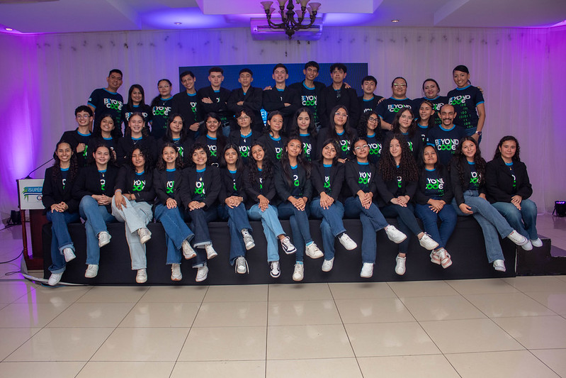
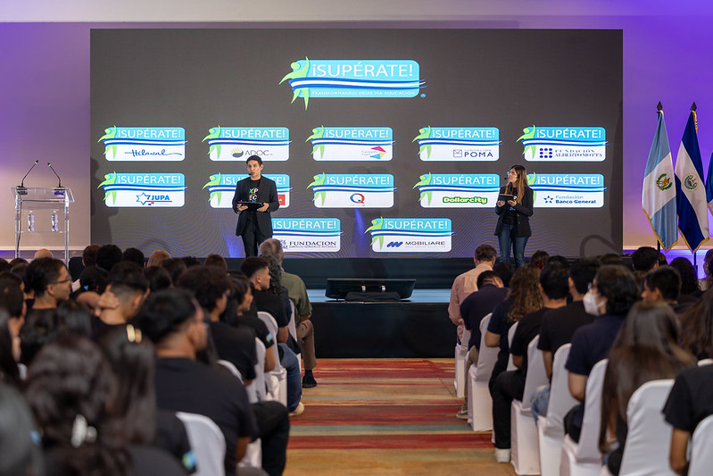
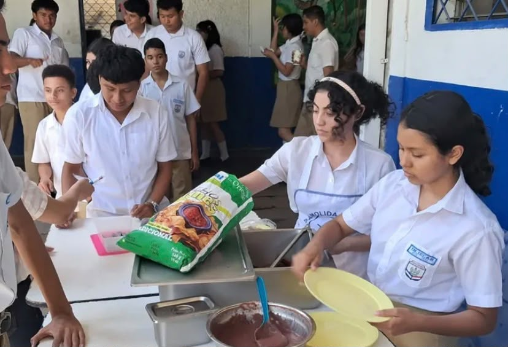

2025 - Actualidad
Bachillerato
Instituto Nacional Joaquín Ernesto Cárdenas
Curso actualmente el segundo año de bachillerato, complementando mi formación con programas tecnológicos y actividades extracurriculares.
Hola, soy
Soy una joven estudiante de bachillerato interesada en la tecnología, la robótica, la programación y la innovación. Soy una persona apasionada por aprender y participar activamente en mi entorno, también me considero creativa, responsable y perseverante, con experiencia trabajando en equipo y participando en proyectos tecnológicos y educativos.
FORMACIÓN ACADÉMICA
Un recorrido por las etapas que han formado mi trayectoria académica.
2025 - Actualidad
Instituto Nacional Joaquín Ernesto Cárdenas
Curso actualmente el segundo año de bachillerato, complementando mi formación con programas tecnológicos y actividades extracurriculares.

2016 - 2024
Centro Escolar Prof. Atilio Armando Pérez Soto
Formación básica y desarrollo de competencias académicas, sociales y personales.

2024 - Actualidad
Programa Empresarial ¡Supérate! Grupo Q
Programa de formación que fortalece mis conocimientos en inglés, informática y valores, impulsando mi crecimiento académico y profesional.
LOGROS ACADÉMICOS
Esfuerzo, disciplina y constancia en cada paso.
Portafolio
Algunos de los proyectos en los que he participado, demostrando compromiso, creatividad y ganas de generar un impacto positivo.
Supérate · 2024
Desarrollo de InterShip Experience, una aplicación creada con Microsoft Power Apps para organizar la gestión y seguimiento de pasantías.

Supérate · 2024
Proyecto ambiental con una página web sobre huella de carbono y un prototipo físico de sistema de reciclaje, integrando tecnología y cuidado ambiental.

Supérate · 2025
Aplicación ambiental enfocada en promover hábitos sostenibles y generar conciencia sobre el impacto ambiental.
VOLUNTARIADO
Experiencias que me han permitido aprender, servir y generar un impacto positivo en mi comunidad.

Completé más de 75 horas de servicio social colaborando en el comedor y la atención de alimentos para los estudiantes del instituto, fomentando la convivencia y el compañerismo.
Apoyo constante en la elaboración y venta de platillos durante eventos especiales de mi iglesia, con el propósito de recaudar fondos para proyectos benéficos y comunitarios.
Participación activa en jornadas comunitarias para la recolección de desechos, limpieza de áreas verdes y concientización sobre el cuidado del medio ambiente local.